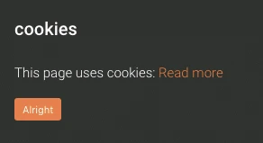
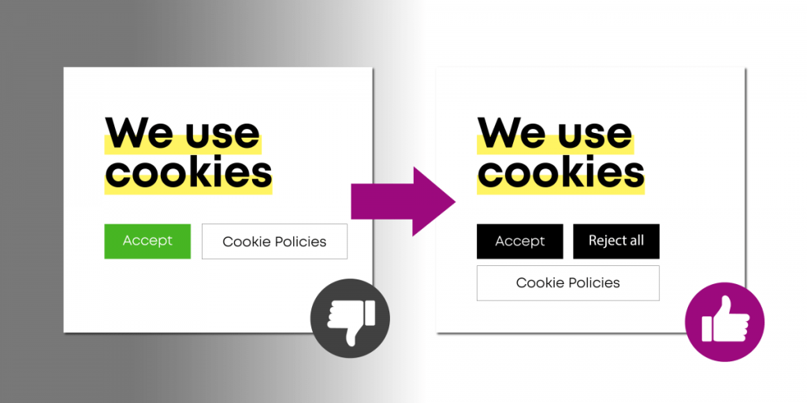
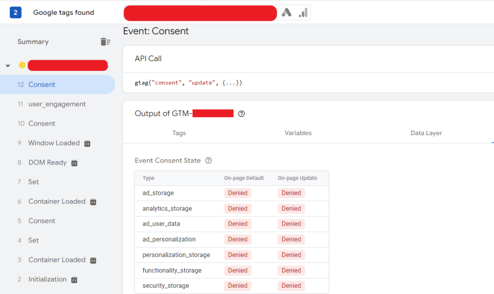
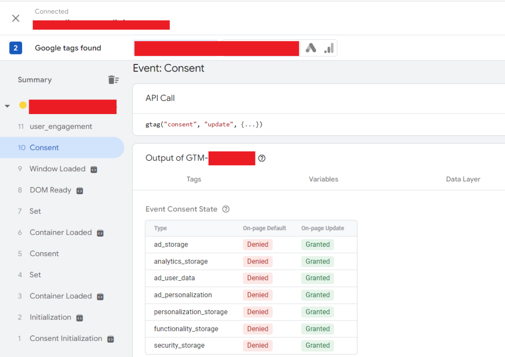

Banner Cookie e Consent Mode: La Guida Completa per il Tuo Sito Web

In un'epoca in cui la privacy online è al centro dell'attenzione, capire come funzionano i banner cookie è fondamentale per qualsiasi proprietario di sito web. Ma come si fa a distinguere un banner a norma di legge da uno obsoleto? E cos'è esattamente la Consent Mode di Google? Questa guida ti spiega tutto, in modo semplice e chiaro.
Come Riconoscere un Banner Cookie Corretto e a Norma
Per anni, i siti web hanno usato banner cookie rudimentali, spesso con la sola funzione di un "disclaimer" o un semplice pulsante "OK". Questi banner, però, non garantivano una vera accettazione o rifiuto da parte dell'utente. Cliccare su "OK" o sulla "X" significava solo chiudere la finestra, mentre i cookie venivano comunque salvati e processati.
Un banner cookie conforme alle normative attuali, come il GDPR, è completamente diverso. Deve offrire un controllo granulare all'utente, permettendogli di:
- Accettare tutti i cookie: L'utente acconsente al tracciamento completo.
- Rifiutare tutti i cookie: Il sito deve "dimenticarsi" di questo utente, non salvando alcun dato.
- Accettare solo una parte dei cookie: L'utente può scegliere, ad esempio, di accettare i cookie tecnici (necessari per il funzionamento del sito) ma rifiutare quelli di marketing.
Il banner deve essere integrato con un datalayer dettagliato, che processa ogni scelta dell'utente e la traduce in un'azione specifica per il sito e gli strumenti di analisi.
L'Evoluzione del Banner Cookie: Da Semplice Avviso a Strumento di Privacy
Il vecchio modello con il solo pulsante "OK" o la "X" è ormai superato. Non solo non è conforme alle normative, ma non tutela la privacy dell'utente. Un banner moderno, invece, è uno strumento interattivo che rispetta la volontà dell'utente, attivando o disattivando specifici script di tracciamento in base alle sue preferenze. Se un utente rifiuta i cookie di marketing, il sito non deve salvare o processare dati relativi al suo comportamento, come le pagine visitate o i prodotti aggiunti al carrello.

Google Consent Mode: Cos'è e Perché è Essenziale
L'introduzione della Consent Mode di Google rappresenta un passo fondamentale per tutti i siti che utilizzano Google Analytics, Google Ads e altri servizi della suite. La Consent Mode è un sistema che permette di adattare il comportamento dei tag di Google in base allo stato di consenso dell'utente. In poche parole, comunica a Google se un utente ha accettato o meno l'uso dei cookie.
Un'installazione corretta della Consent Mode deve essere in grado di:
Impostare lo stato di rifiuto per default: Prima che l'utente esprima il suo consenso, tutti i tag di tracciamento devono essere disattivati.
Attivare solo i tag per i quali è stato dato il consenso: Ad esempio, se l'utente accetta solo i cookie analitici, il sistema deve attivare solo i tag di Google Analytics.


Come Verificare un'Installazione Corretta della Consent Mode
Per capire se la tua Consent Mode funziona correttamente, puoi utilizzare la funzione di anteprima e debug di Google Tag Manager. Se l'installazione è corretta, vedrai lo stato dei tag cambiare in base alle scelte fatte sul banner:
- Senza consenso: Tutti i tag devono risultare bloccati.
- Con consenso parziale o totale: I tag corrispondenti al consenso dato devono attivarsi.


Il Modelling dei Dati di Google: Come Compensare la Perdita di Dati
Quando gli utenti rifiutano i cookie, si crea un vuoto di dati che può influenzare le analisi e le campagne di marketing. Per risolvere questo problema, Google ha introdotto il data modeling.
Questo meccanismo utilizza l'intelligenza artificiale e l'apprendimento automatico per stimare il comportamento degli utenti che non hanno dato il consenso, basandosi sul comportamento degli utenti che hanno accettato i cookie e sui dati storici. In questo modo, l'algoritmo crea una "proiezione" per colmare il vuoto di dati.
Impatto sul Marketing Digitale e il ROI
Il modelling dei dati è cruciale per mantenere l'efficacia delle campagne di marketing, come quelle gestite tramite lo Smart Bidding di Google. Senza un sistema di modellazione, gli algoritmi di intelligenza artificiale vedrebbero una drastica riduzione degli utenti tracciati, portando a:
- Aumento del CPA (Costo per Acquisizione): La piattaforma investe lo stesso budget su un numero inferiore di utenti, rendendo ogni conversione più costosa.
- Diminuzione del ROAS (Ritorno sulla Spesa Pubblicitaria): Il ritorno sull'investimento sembra calare, spingendo gli algoritmi a ricalibrarsi in modo meno efficiente.
Il modelling permette di superare questa fase di "apprendimento" e di continuare a ottimizzare le campagne, garantendo una visione più fedele e completa dell'attività degli utenti sul sito web.